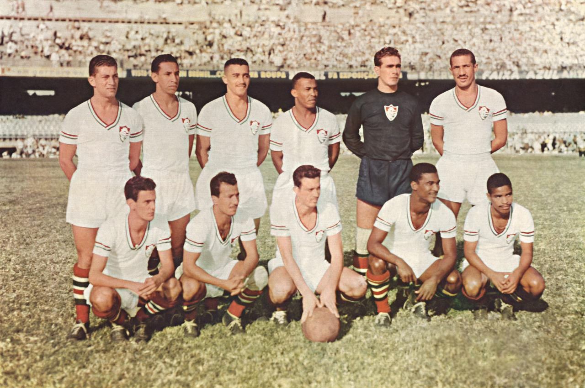

O Fluminense Football Club surgiu em 21 de julho de 1902, no bairro das Laranjeiras, no Rio de Janeiro, como oprimeiro clube do Estado fundado só para o futebol. A equipe tricolor carioca foi a maior campeã do Estadual do Rio noséculo XX. Seu estádio, Manuel Schwartz, sediou jogos da Seleção Brasileira entre 1919 e 1932. Entre os principaistítulos do Fluminense estão a Copa Rio de 1952, os Torneios Rio-São Paulo de 1957 e 1960, o Torneio RobertoGomes Pedrosa de 1970, o Campeonato Brasileiro de 1984, 2010 e 2012 e a Copa do Brasil de 2007. O time maisfamoso da história do clube foi a chamada "Máquina Tricolor", liderado por Rivellino no fim da década de 1970.
Sou tricolor de coração
Sou do clube tantas vezes campeão
Fascina pela sua disciplina
O fluminense me domina
Eu tenho amor ao tricolor
Salve o querido pavilhão
Das três cores que traduzem tradição
A paz, a esperança e o vigor
Unido e forte pelo esporte
Eu sou é tricolor
Vence o Fluminense
Com o verde da esperança
Pois quem espera sempre alcança
Clube que orgulha o Brasil
Retumbante de glórias e vitórias mil
Sou tricolor de coração
Sou do clube tantas vezes campeão
Fascina pela sua disciplina
O Fluminense me domina
Eu tenho amor ao tricolor
Salve o querido pavilhão
Das três cores que traduzem tradição
A paz, a esperança e o vigor
Unido e forte pelo esporte
Eu sou é tricolor
Vence o Fluminense
Com sangue do encarnado
Com amor e com vigor
Faz a torcida querida
Vibrar com a emoção do tricampeão